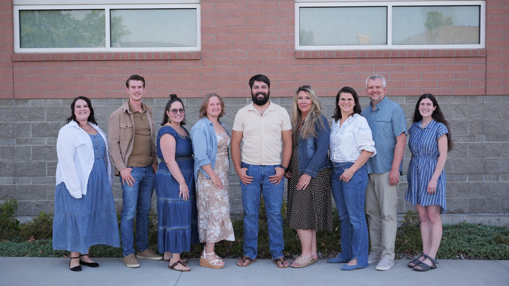

Our Teachers
Small classes exist so that every teacher knows every child by name.

At River Tech todayChoose a class below to see the adults who will know your child by name.
Show me the teachers for…
No one matches that just yet. Clear the filters and try another word.
About our teachers & their week
Choose a name to read their biography and see their whole week — when they teach, which class, and which room.
Dan Hegelund, principal at River Tech, holds a B.S. and M.S in Political Science. Dan is a professional vocal coach, choir director, music director, etc. He has thirty years of experience teaching and producing music and heads the River Tech Arts department. Expect concerts, musicals, studio recordings, music videos, choir trips, talent shows, music festivals, etc.
| Time | Monday | Tuesday | Wednesday | Thursday | Friday |
|---|---|---|---|---|---|
| 9:35–10:25 | Math 🌳 Middle School | English 🌳 Middle School | |||
| 10:25–11:05 | “Aladdin” & Christmas Concert 🎤 Elementary, Middle School, Junior High, High School, Homeschool | Leadership Mindset 🚀 Junior High | |||
| 11:05–11:45 | Leadership Mindset [UH] 🎨 Homeschool | Critical Thinking & Debate [UH] 💃 Homeschool | A.I. & Machine Learning [UH] 🚀 Homeschool | ||
| 1:00–1:40 | “Peter & Alice — The Way Home” 🎤 Elementary, Middle School, Junior High, Homeschool “Peter & Alice — The Way Home” 🎤 High School | (B) Piano 🎻 High School | |||
| 1:40–2:20 | (B) Piano 🎻 Middle School, Junior High | (B) Study Hall 🎻 High School |
Dan’s week — Quarter 1, as of 2026-08-29. The same source as the Schedule & Calendar page, so the two can never disagree.
Mary Hegelund holds a B.S. and M.S. in Education and leads River Tech Elementary. She has worked at a preschool, kindergarten, and elementary school and as a homeschooler of three children. Mary loves teaching children team building, teamwork, and leadership skills.
| Time | Monday | Tuesday | Wednesday | Thursday | Friday |
|---|---|---|---|---|---|
| 8:45–9:35 | Math 💡 Elementary | Soc. Studies 💡 Elementary | |||
| 9:35–10:25 | English 💡 Elementary | English 💡 Elementary | |||
| 10:25–11:05 | Make & Keep Friends [YH] 🌳 Homeschool | Math 💡 Elementary | P.E. 💃 Elementary, Middle School | ||
| 11:05–11:45 | Science 💡 Elementary | (B) Silent Reading 🎻 Elementary | Crafts 🎨 Middle School | ||
| 1:00–1:40 | Study Hall 🎻 Junior High | Crafts [YH] 🎨 Homeschool | |||
| 1:40–2:20 | Study Hall 🎻 Middle School | Crafts 🎨 Elementary | Fine Arts 🎨 Elementary |
Mary’s week — Quarter 1, as of 2026-08-29. The same source as the Schedule & Calendar page, so the two can never disagree.
Caitlin Relvas has a B.A. in English and Classical Civilizations. She has a minor in Dance and has been studying and teaching dance for most of her life. Caitlin loves to teach K-1 students problem-solving skills and responsibility and teach middle and high school English students the art of writing and an appreciation for story.
| Time | Monday | Tuesday | Wednesday | Thursday | Friday |
|---|---|---|---|---|---|
| 8:45–9:35 | English High School | English High School | English High School | English High School | |
| 9:35–10:25 | English 🚀 Junior High | English 🚀 Junior High | English 🚀 Junior High | English 🚀 Junior High | |
| 10:25–11:05 | English ☀ Elementary | Literature 🎨 Junior High | Creative Writing [UH] 🚀 Homeschool | ||
| 11:05–11:45 | Soc. Studies 🌳 Middle School | Soc. Studies High School | Creative Writing [YH] 🌳 Homeschool | ||
| 1:00–1:40 | Literature 🌳 Middle School | (A) Dance High School | Literature High School | ||
| 1:40–2:20 | Soc. Studies 🚀 Junior High | (A) Dance 💃 Middle School, Junior High | Critical Thinking & Debate [YH] 💃 Homeschool | ||
| Lunch | P.E. & Lunch at The Park Junior High | P.E. & Lunch at The Park High School |
Caitlin’s week — Quarter 1, as of 2026-08-29. The same source as the Schedule & Calendar page, so the two can never disagree.
Jordan Ezell holds a B.S. in Game Development from Full Sail University and a degree from Master’s Commission in Biblical Counseling. He loves creating board games and video games, and can’t wait to teach our students how to create their own games. Jordan is heading the Tech Department at River Tech. Expect your kids to learn programming, robotics, 3D animation, videography, sound engineering, game development, etc. River Tech has an outstanding tech program.
| Time | Monday | Tuesday | Wednesday | Thursday | Friday |
|---|---|---|---|---|---|
| 8:45–9:35 | Math 🚀 Junior High | Math 🚀 Junior High | Math 🚀 Junior High | Math 🚀 Junior High | |
| 9:35–10:25 | Math High School | Math High School | Math High School | Math High School | |
| 10:25–11:05 | Personal Finance & Family Life [UH] 🎨 Homeschool | Coding / AI High School | Coding / A.I. High School | Robotics [UH] 🤖 Homeschool | |
| 11:05–11:45 | Coding 🚀 Junior High | Coding 🚀 Junior High | Year Book High School | A.I. & Machine Learning [UH] 🚀 Homeschool | |
| 1:00–1:40 | Chemistry [UH] ☕ Homeschool | Physics ☕ Junior High | Science 🌳 Middle School | Coding [UH] ☕ Homeschool | |
| 1:40–2:20 | Chemistry [YH] ☕ Homeschool | Physics High School | Coding 🚀 Junior High | Coding 🌳 Middle School | |
| Lunch | P.E. & Lunch at The Park Junior High | P.E. & Lunch at The Park Middle School | P.E. & Lunch at The Park High School | P.E. & Lunch at The Park Elementary |
Jordan’s week — Quarter 1, as of 2026-08-29. The same source as the Schedule & Calendar page, so the two can never disagree.
Luke Hegelund is the media director at River Tech, with four years of teaching experience. Luke is a proficient multi-instrumentalist, having offered private piano, guitar, and drum lessons outside of his work at River Tech. Additionally, he is a professional videographer, having produced wedding films, short films, and commercials. While working at River Tech, Luke is finishing his degree in Theology and pursuing a degree in education. Students can look forward to learning filmmaking, music, and 3D design from Luke.
| Time | Monday | Tuesday | Wednesday | Thursday | Friday |
|---|---|---|---|---|---|
| 8:45–9:35 | Math 🚀 Junior High | Math 🌳 Middle School | P.E. at The Park or Library Elementary | Math 🌳 Middle School | Math 🌳 Middle School |
| 9:35–10:25 | Math High School | English 🌳 Middle School | English 🌳 Middle School | English 🌳 Middle School | |
| 10:25–11:05 | Filmmaking 💃 Middle School | Robotics 🤖 Middle School | Drill 💃 Junior High | Film Making [YH] 🎨 Homeschool | |
| 11:05–11:45 | Money [YH] 💃 Homeschool | Coding 🎻 Middle School | Filmmaking 🚀 Junior High | Robotics [YH] 🤖 Homeschool | |
| 1:00–1:40 | Filmmaking High School | (C) Ukulele 🎻 High School | (B) Study Hall 🎻 Junior High | Coding 🎨 Elementary | |
| 1:40–2:20 | Filmmaking High School | (C) Ukulele 🎻 Middle School, Junior High | Bible 🌳 Middle School | Film Making [UH] 💃 Homeschool | |
| Lunch | P.E. & Lunch at The Park Elementary |
Luke’s week — Quarter 1, as of 2026-08-29. The same source as the Schedule & Calendar page, so the two can never disagree.
| Time | Monday | Tuesday | Wednesday | Thursday | Friday |
|---|---|---|---|---|---|
| 8:45–9:35 | Math 🎨 Elementary | Math ☀ Elementary | P.E. at The Park or Library Elementary | Soc. Studies ☀ Elementary | Math 🎨 Elementary |
| 9:35–10:25 | English 🎨 Elementary | English ☀ Elementary | English ☀ Elementary | English 🎨 Elementary | |
| 10:25–11:05 | Math/English 💡 Elementary | Games 💃 Elementary | Fine Arts [YH] 🎨 Homeschool | Fine Arts High School | |
| 11:05–11:45 | Science ☀ Elementary | Bible/Worship/Prayer 🎨 Elementary | Fine Art 🎨 Middle School | Sketchbook Pro 🎻 Elementary | |
| 1:00–1:40 | Nutrition & Health 🎨 Elementary | Performing Arts Production 💃 Elementary | Fine Art [UH] ☕ Homeschool | Sketchbook Pro 🌳 Middle School | |
| 1:40–2:20 | Nutrition & Health 🎨 Elementary | Free Play 🎨 Elementary | Fine Art [UH] ☕ Homeschool | Fine Arts ☕ Junior High |
Tiffany’s week — Quarter 1, as of 2026-08-29. The same source as the Schedule & Calendar page, so the two can never disagree.
| Time | Monday | Tuesday | Wednesday | Thursday | Friday |
|---|---|---|---|---|---|
| 8:45–9:35 | English 🌳 Middle School | Math 🌳 Middle School | |||
| 10:25–11:05 | “Aladdin” & Christmas Concert 🎤 Elementary, Middle School, Junior High, High School, Homeschool | Math ☀ Elementary | |||
| 1:00–1:40 | “Peter & Alice — The Way Home” 🎤 Elementary, Middle School, Junior High, Homeschool “Peter & Alice — The Way Home” 🎤 High School | Performing Arts Production 💃 Elementary | Coding [YH] 🚀 Homeschool | ||
| 1:40–2:20 | Digital Arts [YH] 🚀 Homeschool | ||||
| Lunch | Performers’ Lunch Homeschool | P.E. & Lunch at The Park Middle School |
Charlotte’s week — Quarter 1, as of 2026-08-29. The same source as the Schedule & Calendar page, so the two can never disagree.
| Time | Monday | Tuesday | Wednesday | Thursday | Friday |
|---|---|---|---|---|---|
| 8:45–9:35 | English High School | ||||
| 9:35–10:25 | English 🚀 Junior High | ||||
| 10:25–11:05 | Film Making [YH] 🎨 Homeschool | ||||
| 11:05–11:45 | Bible 💃 Junior High | ||||
| 1:00–1:40 | Big Picture Geography [YH] 🚀 Homeschool | Bible High School | |||
| 1:40–2:20 | Big Picture Geography [UH] 🌳 Homeschool | Film Making [UH] 💃 Homeschool |
Kirsten’s week — Quarter 1, as of 2026-08-29. The same source as the Schedule & Calendar page, so the two can never disagree.
| Time | Monday | Tuesday | Wednesday | Thursday | Friday |
|---|---|---|---|---|---|
| 8:45–9:35 | Math 🎨 Elementary | ||||
| 9:35–10:25 | English 🎨 Elementary | ||||
| 10:25–11:05 | Robotics [UH] 🤖 Homeschool | ||||
| 11:05–11:45 | Robotics [YH] 🤖 Homeschool | ||||
| 1:00–1:40 | Nutrition & Health 🎨 Elementary | Drawing 🚀 Elementary | Coding [YH] 🚀 Homeschool | ||
| 1:40–2:20 | Nutrition & Health 🎨 Elementary | Crafts 🎨 Elementary | Fine Arts 🎨 Elementary |
Emily’s week — Quarter 1, as of 2026-08-29. The same source as the Schedule & Calendar page, so the two can never disagree.
Phil Munts teaches Python Programming and Robotics part time at River Tech School. He is retired twice: first after 33 years of software and computing engineering, including 12 years in Sweden at Securitas Direct/Verisure and Sigma Connectivity Engineering, and then after three years of pastoring full time at Grand Coulee Church of the Nazarene. Most of his career involved embedded systems ranging from single-chip microcontrollers to a NASA ground station.
Fun fact: Phil was a rogue missionary and professional pancake flipper for the Church of the Nazarene at Fill My Cup Cafe in the village of Arrie, Sweden.
His hobbies include photography, shooting, and metallic cartridge reloading. You can find him most of the week at a mountainside cabin near St. Maries. He returns reluctantly to civilization Thursday through Sunday and whenever winter snow closes the road.
| Time | Monday | Tuesday | Wednesday | Thursday | Friday |
|---|---|---|---|---|---|
| 10:25–11:05 | Python 🚀 Junior High | ||||
| 11:05–11:45 | Python High School | ||||
| 1:00–1:40 | Robotics 🤖 Junior High | ||||
| 1:40–2:20 | Robotics High School |
Phil’s week — Quarter 1, as of 2026-08-29. The same source as the Schedule & Calendar page, so the two can never disagree.
Cristina Maness teaches Spanish at River Tech. Spanish is her first language: she was born in Puerto Rico, where she graduated from the Interamerican University with a bachelor’s degree in psychology. She is also a retired Army veteran, and she has taught Spanish and History in previous co-ops. This is her second year teaching at River Tech, and she is excited for the new year. Cristina is both a part-time teacher and the parent of two children in the homeschool Friday program.
| Time | Monday | Tuesday | Wednesday | Thursday | Friday |
|---|---|---|---|---|---|
| 10:25–11:05 | (A) Spanish 🎻 Middle School | ||||
| 11:05–11:45 | (A) Spanish 🎻 Elementary | ||||
| 1:00–1:40 | (A) Spanish 🎻 Junior High | ||||
| 1:40–2:20 | (A) Spanish 🎻 High School |
Cristina’s week — Quarter 1, as of 2026-08-29. The same source as the Schedule & Calendar page, so the two can never disagree.
| Time | Monday | Tuesday | Wednesday | Thursday | Friday |
|---|---|---|---|---|---|
| 10:25–11:05 | Organizational Design & Management High School | ||||
| 11:05–11:45 | Leadership Mindset High School |
Penny’s week — Quarter 1, as of 2026-08-29. The same source as the Schedule & Calendar page, so the two can never disagree.
| Time | Monday | Tuesday | Wednesday | Thursday | Friday |
|---|---|---|---|---|---|
| 10:25–11:45 | Costumes for “Aladdin” & Christmas Concert 🎤 🎤 Productions | ||||
| 12:45–2:20 | Costumes for “Peter & Alice”, Talent Show & Summer Concert 🎤 🎤 Productions | ||||
| Lunch | Performers’ Lunch Homeschool |
Angie’s week — Quarter 1, as of 2026-08-29. The same source as the Schedule & Calendar page, so the two can never disagree.
| Time | Monday | Tuesday | Wednesday | Thursday | Friday |
|---|---|---|---|---|---|
| 10:25–11:45 | Props for “Aladdin” & Christmas Concert 🎤 🎤 Productions | ||||
| 12:45–2:20 | Props for “Peter & Alice”, Talent Show & Summer Concert 🎤 🎤 Productions | ||||
| Lunch | Performers’ Lunch Homeschool |
Kara’s week — Quarter 1, as of 2026-08-29. The same source as the Schedule & Calendar page, so the two can never disagree.
Reaching a teacher
Write to learn@rivertech.me, say which teacher you would like to reach, and Brooke passes your message straight to them. We keep teachers’ addresses off the public web so their inboxes stay for families rather than for strangers.
If something is unresolved after speaking with a teacher, write to the Principal and copy the teacher. That ladder is set out in full on the School Start Hub.